library("readr")
library("ggplot2")
library("dplyr")Statistik 6: Demo
Demoscript herunterladen (.qmd)
- Datensatz rm_plants.csv
- Datensatz DeerEcervi.csv
Repeated measurement
Es handelt sich um einen Düngeversuch (Daten aus Lepš & Šmilauer 2020). 18 Pflanzenindividuen wurden zufällig einer von drei Düngevarianten zugewiesen und dabei zu vier Zeitpunkten ihre Wuchshöhe gemessen. Abhängigkeiten sind hier in zwei Aspekten vorhanden: einerseits wurde jedes Pflanzenindividuum mehrfach gemessen, andererseits hat es nur jeweils eine Düngervariante erhalten.
# Daten laden
plantf <- read_delim("datasets/stat/rm_plants.csv", delim = ";") |>
mutate( across(where(is.character), as.factor))str(plantf)tibble [72 × 4] (S3: tbl_df/tbl/data.frame)
$ PlantHeight: num [1:72] 5 7 9 11 6 9 12 15 7 8 ...
$ Treatment : Factor w/ 3 levels "Nitrogen","Phosphorus",..: 3 3 3 3 1 1 1 1 2 2 ...
$ Time : Factor w/ 4 levels "T0","T1","T2",..: 1 2 3 4 1 2 3 4 1 2 ...
$ PlantID : Factor w/ 18 levels "P01","P02","P03",..: 1 1 1 1 2 2 2 2 3 3 ...summary(plantf) PlantHeight Treatment Time PlantID
Min. : 4.000 Nitrogen :24 T0:18 P01 : 4
1st Qu.: 6.000 Phosphorus:24 T1:18 P02 : 4
Median : 9.000 Water :24 T2:18 P03 : 4
Mean : 9.306 T3:18 P04 : 4
3rd Qu.:11.000 P05 : 4
Max. :18.000 P06 : 4
(Other):48 table(plantf$Treatment, plantf$PlantID)
P01 P02 P03 P04 P05 P06 P07 P08 P09 P10 P11 P12 P13 P14 P15 P16
Nitrogen 0 4 0 0 4 0 0 4 0 0 4 0 0 4 0 0
Phosphorus 0 0 4 0 0 4 0 0 4 0 0 4 0 0 4 0
Water 4 0 0 4 0 0 4 0 0 4 0 0 4 0 0 4
P17 P18
Nitrogen 4 0
Phosphorus 0 4
Water 0 0# Mit aov
pf_eaov <- aov(PlantHeight ~ Treatment * Time + Error(PlantID), data = plantf)
summary(pf_eaov)
Error: PlantID
Df Sum Sq Mean Sq F value Pr(>F)
Treatment 2 115.36 57.68 21.68 3.76e-05 ***
Residuals 15 39.92 2.66
---
Signif. codes: 0 '***' 0.001 '**' 0.01 '*' 0.05 '.' 0.1 ' ' 1
Error: Within
Df Sum Sq Mean Sq F value Pr(>F)
Time 3 588.1 196.02 382.13 < 2e-16 ***
Treatment:Time 6 64.9 10.81 21.07 1.37e-11 ***
Residuals 45 23.1 0.51
---
Signif. codes: 0 '***' 0.001 '**' 0.01 '*' 0.05 '.' 0.1 ' ' 1# Als LMM
library("glmmTMB")
pf_lmm <- glmmTMB(PlantHeight ~ Treatment * Time + (1 | PlantID),
family = gaussian,
REML = TRUE,
data = plantf)
library("car")
Anova(pf_lmm)Analysis of Deviance Table (Type II Wald chisquare tests)
Response: PlantHeight
Chisq Df Pr(>Chisq)
Treatment 43.351 2 3.859e-10 ***
Time 1146.390 3 < 2.2e-16 ***
Treatment:Time 126.444 6 < 2.2e-16 ***
---
Signif. codes: 0 '***' 0.001 '**' 0.01 '*' 0.05 '.' 0.1 ' ' 1summary(pf_lmm) Family: gaussian ( identity )
Formula: PlantHeight ~ Treatment * Time + (1 | PlantID)
Data: plantf
AIC BIC logLik -2*log(L) df.resid
204.4 236.3 -88.2 176.4 58
Random effects:
Conditional model:
Groups Name Variance Std.Dev.
PlantID (Intercept) 0.537 0.7328
Residual 0.513 0.7162
Number of obs: 72, groups: PlantID, 18
Dispersion estimate for gaussian family (sigma^2): 0.513
Conditional model:
Estimate Std. Error z value Pr(>|z|)
(Intercept) 5.1667 0.4183 12.351 < 2e-16 ***
TreatmentPhosphorus 0.6667 0.5916 1.127 0.259796
TreatmentWater 0.1667 0.5916 0.282 0.778160
TimeT1 4.3333 0.4135 10.479 < 2e-16 ***
TimeT2 7.6667 0.4135 18.541 < 2e-16 ***
TimeT3 11.3333 0.4135 27.408 < 2e-16 ***
TreatmentPhosphorus:TimeT1 -2.1667 0.5848 -3.705 0.000211 ***
TreatmentWater:TimeT1 -2.8333 0.5848 -4.845 1.27e-06 ***
TreatmentPhosphorus:TimeT2 -3.6667 0.5848 -6.270 3.61e-10 ***
TreatmentWater:TimeT2 -4.1667 0.5848 -7.125 1.04e-12 ***
TreatmentPhosphorus:TimeT3 -5.0000 0.5848 -8.550 < 2e-16 ***
TreatmentWater:TimeT3 -5.8333 0.5848 -9.975 < 2e-16 ***
---
Signif. codes: 0 '***' 0.001 '**' 0.01 '*' 0.05 '.' 0.1 ' ' 1library("performance")
r2(pf_lmm)# R2 for Mixed Models
Conditional R2: 0.957
Marginal R2: 0.912# Modellvalidierung mit DHARMa
library("DHARMa")
set.seed(123)
simulationOutput <-
simulateResiduals(fittedModel = pf_lmm, plot = TRUE, n = 1000)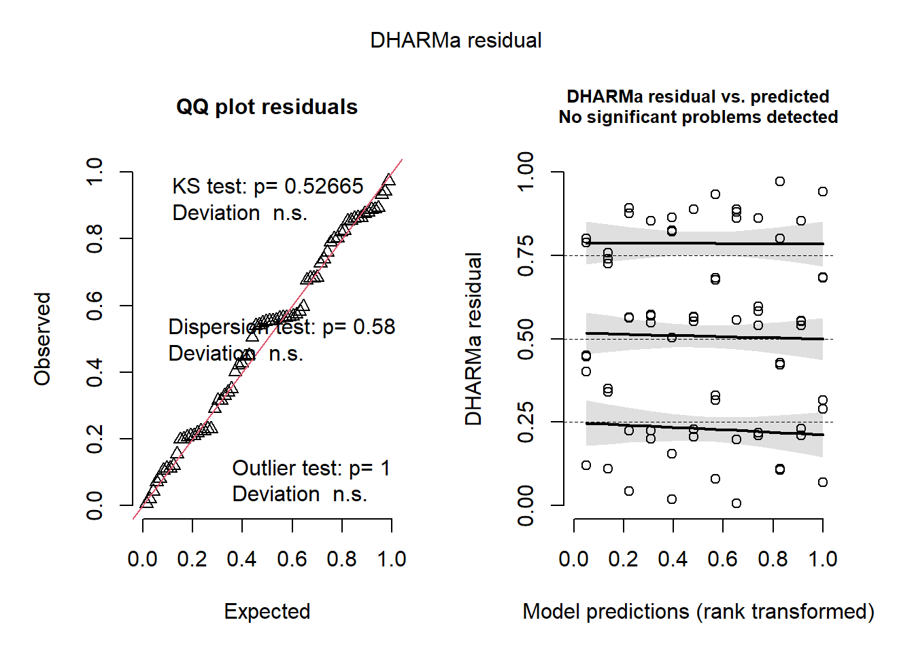
# Plot residuals vs. covariates des models
plotResiduals(simulationOutput, form = plantf$Time)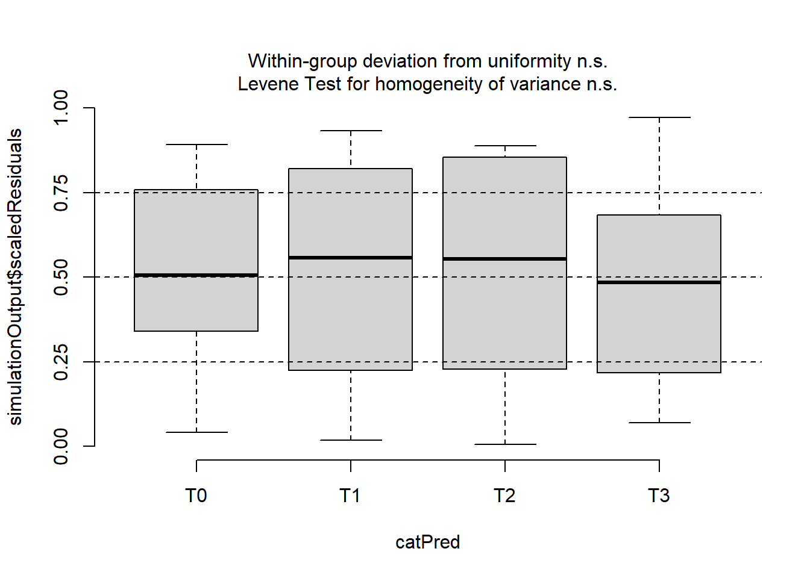
plotResiduals(simulationOutput, form = plantf$Treatment) 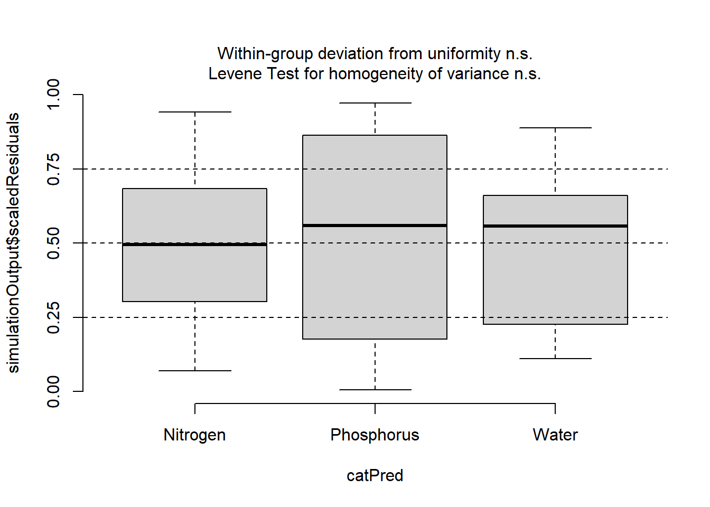
# Darstellung (Interaktions Plot)
library("ggeffects")
pred <- ggpredict(pf_lmm, terms = c("Time", "Treatment"))
pred# Predicted values of PlantHeight
Treatment: Nitrogen
Time | Predicted | 95% CI
-------------------------------
T0 | 5.17 | 4.59, 5.74
T1 | 9.50 | 8.93, 10.07
T2 | 12.83 | 12.26, 13.41
T3 | 16.50 | 15.93, 17.07
Treatment: Phosphorus
Time | Predicted | 95% CI
-------------------------------
T0 | 5.83 | 5.26, 6.41
T1 | 8.00 | 7.43, 8.57
T2 | 9.83 | 9.26, 10.41
T3 | 12.17 | 11.59, 12.74
Treatment: Water
Time | Predicted | 95% CI
-------------------------------
T0 | 5.33 | 4.76, 5.91
T1 | 6.83 | 6.26, 7.41
T2 | 8.83 | 8.26, 9.41
T3 | 10.83 | 10.26, 11.41
Adjusted for:
* PlantID = NA (population-level)plot(pred) +
theme_classic() +
theme(plot.title = element_blank())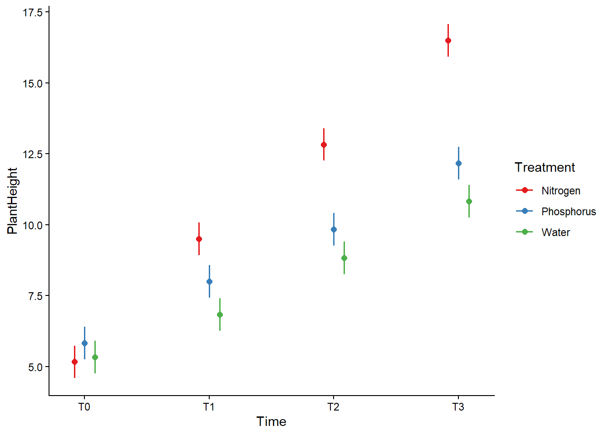
Split-plot Design
Es wurden zufällig fünf Untersuchungsgebiete (sites) ausgewählt, in denen jeweils der gleiche Versuchsblock implementiert wurde, bestehend aus dem Management (treatment) und der Frage, ob wilde Grossherbivoren Zugang zur Fläche hatten (plot type) (Abb. 6.1). Je ein Drittel jeder Untersuchungsfläche (zufällig zugewiesen) blieb gänzlich ungenutzt(U), wurde zu Beginn kontrolliert abgebrannt und danach sich selbst überlassen (B) oder wurde jährlich gemäht (M). Innerhalb jedes Drittels wiederum wurde (zufällig zugewiesen) die Hälfte eingezäunt (F = fenced vs. O = open), um die Beweidung durch Grossherbivoren zu verhindern.
# Import Data
glex <-
read_delim("datasets/stat/Riesch_et_al_2020_grassland.csv", delim = ";") |>
mutate(across(where(is.character), as.factor))str(glex)tibble [60 × 9] (S3: tbl_df/tbl/data.frame)
$ ID_plot : Factor w/ 60 levels "Eul_A1_MP_14",..: 1 2 3 4 5 6 7 8 9 10 ...
$ year : num [1:60] 2014 2018 2014 2018 2014 ...
$ site_code : Factor w/ 5 levels "Eul","Kug","Nun",..: 1 1 1 1 1 1 1 1 1 1 ...
$ site_no : num [1:60] 4 4 4 4 4 4 4 4 4 4 ...
$ treatment : Factor w/ 3 levels "B","M","U": 2 2 2 2 3 3 3 3 1 1 ...
$ plot_type : Factor w/ 2 levels "F","O": 2 2 1 1 2 2 1 1 1 1 ...
$ SR : num [1:60] 44 48 44 47 43 29 44 24 45 37 ...
$ inverseSimpson: num [1:60] 11.41 9.9 10.25 6.51 12.35 ...
$ BergerParker : num [1:60] 0.193 0.21 0.187 0.35 0.155 ...glex$year <- as.factor(glex$year)
summary(glex) ID_plot year site_code site_no treatment plot_type
Eul_A1_MP_14: 1 2014:30 Eul :12 Min. :1 B:20 F:30
Eul_A1_MP_18: 1 2018:30 Kug :12 1st Qu.:2 M:20 O:30
Eul_A2_MK_14: 1 Nun :12 Median :3 U:20
Eul_A2_MK_18: 1 SomO:12 Mean :3
Eul_B1_WP_14: 1 SomW:12 3rd Qu.:4
Eul_B1_WP_18: 1 Max. :5
(Other) :54
SR inverseSimpson BergerParker
Min. :24.00 Min. : 2.538 Min. :0.1200
1st Qu.:39.75 1st Qu.: 7.169 1st Qu.:0.1732
Median :44.00 Median : 9.945 Median :0.2133
Mean :43.52 Mean : 9.347 Mean :0.2551
3rd Qu.:48.00 3rd Qu.:11.555 3rd Qu.:0.2891
Max. :61.00 Max. :16.102 Max. :0.6100
table(glex$site_code, glex$treatment, glex$plot_type, glex$year), , = F, = 2014
B M U
Eul 1 1 1
Kug 1 1 1
Nun 1 1 1
SomO 1 1 1
SomW 1 1 1
, , = O, = 2014
B M U
Eul 1 1 1
Kug 1 1 1
Nun 1 1 1
SomO 1 1 1
SomW 1 1 1
, , = F, = 2018
B M U
Eul 1 1 1
Kug 1 1 1
Nun 1 1 1
SomO 1 1 1
SomW 1 1 1
, , = O, = 2018
B M U
Eul 1 1 1
Kug 1 1 1
Nun 1 1 1
SomO 1 1 1
SomW 1 1 1balanced Design (nicht zwingend nötig für LMM)
LMM with random interecept
REML = TRUE : (Restricted maximum likelihood) v.s REML = FALSE: Maximum likelihood (ML)
Bei REML sind die estimates genauer, aber REML sollte nicht für Modelvergleiche (z.B mit AIcc oder drop1 funktion) benutzt werden Dies ist nur relevant für Gaussian mixed models (LMM) nicht für GLMMs
# 2.1 Model fitten
lmm_1 <- glmmTMB(SR ~ year * treatment * plot_type +
(1| site_code/treatment/plot_type),
family = gaussian,
REML = FALSE,
data = glex)# Manuelle Modelselektion
drop1(lmm_1, test = "Chisq")Single term deletions
Model:
SR ~ year * treatment * plot_type + (1 | site_code/treatment/plot_type)
Df AIC LRT Pr(>Chi)
<none> 385.27
year:treatment:plot_type 2 382.20 0.92894 0.6285lmm_2 <- update(lmm_1,~. -year:treatment:plot_type)
drop1(lmm_2, test = "Chisq")Single term deletions
Model:
SR ~ year + treatment + plot_type + (1 | site_code/treatment/plot_type) +
year:treatment + year:plot_type + treatment:plot_type
Df AIC LRT Pr(>Chi)
<none> 382.20
year:treatment 2 398.84 20.6412 3.295e-05 ***
year:plot_type 1 387.26 7.0678 0.007848 **
treatment:plot_type 2 381.44 3.2413 0.197775
---
Signif. codes: 0 '***' 0.001 '**' 0.01 '*' 0.05 '.' 0.1 ' ' 1lmm_3 <- update(lmm_2,~. -treatment:plot_type)
drop1(lmm_3, test = "Chi")Single term deletions
Model:
SR ~ year + treatment + plot_type + (1 | site_code/treatment/plot_type) +
year:treatment + year:plot_type
Df AIC LRT Pr(>Chi)
<none> 381.44
year:treatment 2 397.16 19.7253 5.208e-05 ***
year:plot_type 1 386.37 6.9307 0.008473 **
---
Signif. codes: 0 '***' 0.001 '**' 0.01 '*' 0.05 '.' 0.1 ' ' 1# Refit with REML
lmm_4 <- update(lmm_3, REML = TRUE)# Modellselektion mit AICc
library(MuMIn)
options(na.action = "na.fail")
allmodels <- dredge(lmm_1)
allmodelsGlobal model call: glmmTMB(formula = SR ~ year * treatment * plot_type + (1 | site_code/treatment/plot_type),
data = glex, family = gaussian, REML = FALSE, ziformula = ~0,
dispformula = ~1)
---
Model selection table
cnd((Int)) dsp((Int)) cnd(plt_typ) cnd(trt) cnd(yer) cnd(plt_typ:trt)
56 45.90 + + + +
64 47.30 + + + + +
40 44.45 + + + +
48 45.85 + + + + +
128 46.60 + + + + +
5 47.43 + +
24 47.17 + + + +
7 46.67 + + +
6 46.48 + + +
8 45.72 + + + +
32 48.57 + + + + +
16 47.12 + + + + +
3 42.75 + +
2 42.57 + +
4 41.80 + + +
1 43.52 +
12 43.20 + + + +
22 47.93 + + +
39 45.40 + + +
cnd(plt_typ:yer) cnd(trt:yer) cnd(plt_typ:trt:yer) df logLik AICc delta
56 + + 12 -178.719 388.1 0.00
64 + + 14 -177.098 391.5 3.45
40 + 11 -182.184 391.9 3.79
48 + 13 -180.632 395.2 7.10
128 + + + 16 -176.634 397.9 9.84
5 6 -193.850 401.3 13.21
24 + 10 -188.582 401.7 13.58
7 8 -191.639 402.1 14.02
6 7 -192.974 402.1 14.03
8 9 -190.763 403.1 15.05
32 + 12 -187.419 405.5 17.40
16 11 -189.711 406.9 18.84
3 7 -202.937 422.0 33.95
2 6 -204.570 422.7 34.65
4 8 -202.396 423.6 35.54
1 5
12 10
22 + 8
39 + 10
Models ranked by AICc(x)
Random terms (all models):
cond(1 | site_code/treatment/plot_type)best_model <- get.models(allmodels, delta==0)[[1]]# Mit REML refitten
lmm_2 <- update(best_model, REML = TRUE)
# Resultat
Anova(lmm_2)Analysis of Deviance Table (Type II Wald chisquare tests)
Response: SR
Chisq Df Pr(>Chisq)
plot_type 2.3609 1 0.124407
treatment 4.3128 2 0.115741
year 49.3013 1 2.195e-12 ***
plot_type:year 6.7571 1 0.009338 **
treatment:year 23.1682 2 9.313e-06 ***
---
Signif. codes: 0 '***' 0.001 '**' 0.01 '*' 0.05 '.' 0.1 ' ' 1summary(lmm_2) Family: gaussian ( identity )
Formula:
SR ~ plot_type + treatment + year + (1 | site_code/treatment/plot_type) +
plot_type:year + treatment:year
Data: glex
AIC BIC logLik -2*log(L) df.resid
358.2 383.3 -167.1 334.2 48
Random effects:
Conditional model:
Groups Name Variance Std.Dev.
plot_type:treatment:site_code (Intercept) 2.1332 1.4606
treatment:site_code (Intercept) 8.0931 2.8448
site_code (Intercept) 0.8542 0.9242
Residual 18.6692 4.3208
Number of obs: 60, groups:
plot_type:treatment:site_code, 30; treatment:site_code, 15; site_code, 5
Dispersion estimate for gaussian family (sigma^2): 18.7
Conditional model:
Estimate Std. Error z value Pr(>|z|)
(Intercept) 45.900 2.136 21.487 < 2e-16 ***
plot_typeO -1.000 1.665 -0.600 0.548210
treatmentM 2.300 2.720 0.846 0.397761
treatmentU 3.800 2.720 1.397 0.162377
year2018 -8.200 2.231 -3.675 0.000238 ***
plot_typeO:year2018 5.800 2.231 2.599 0.009338 **
treatmentM:year2018 2.400 2.733 0.878 0.379808
treatmentU:year2018 -10.000 2.733 -3.659 0.000253 ***
---
Signif. codes: 0 '***' 0.001 '**' 0.01 '*' 0.05 '.' 0.1 ' ' 1r2(lmm_2)# R2 for Mixed Models
Conditional R2: 0.688
Marginal R2: 0.502Modelvalidierung
Wenn wir LMM für Zähldaten wie Anzahl Arten verwenden, sollten wir sicherstellen das keine Werte <0 predicted werden (ansonsten brauchen wir GLMM
mit poisson Verteilung)
sum( fitted(lmm_2) < 0)[1] 0set.seed(123)
simulationOutput <-
simulateResiduals(fittedModel = lmm_2, plot = TRUE, n = 1000)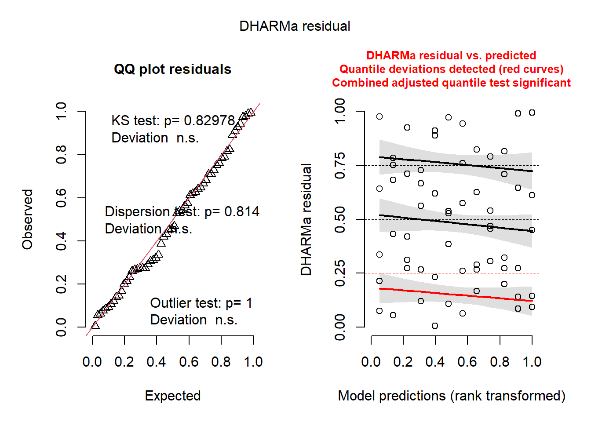
# Plot residuals vs. covariates des Modells
plotResiduals(simulationOutput, form = glex$year)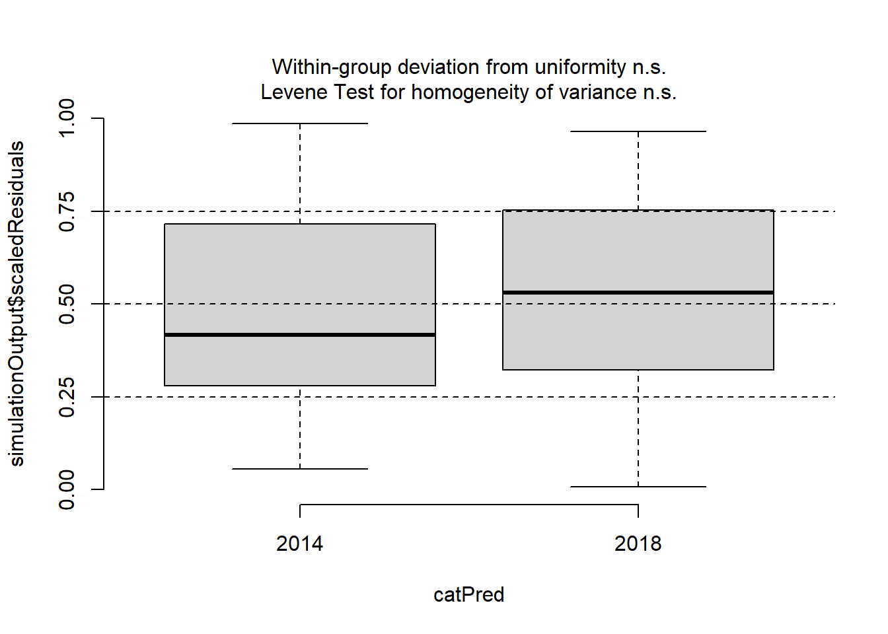
plotResiduals(simulationOutput, form = glex$treatment)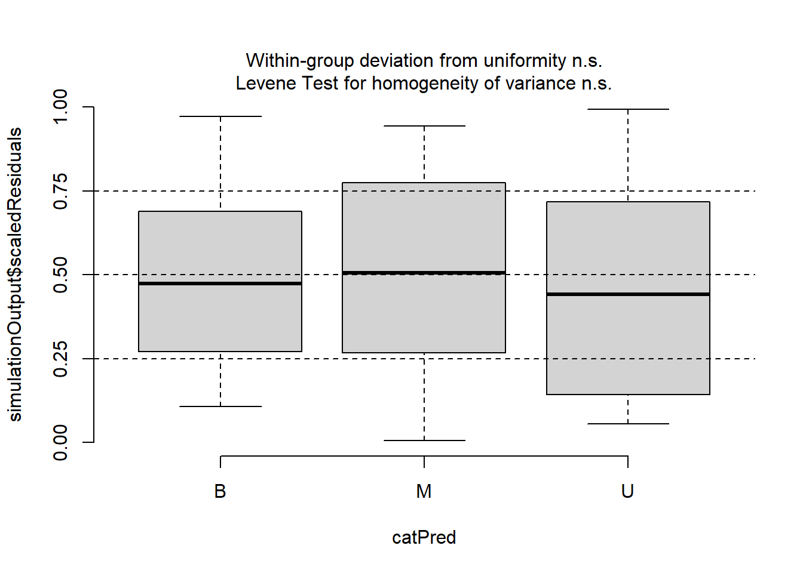
plotResiduals(simulationOutput, form = glex$plot_type)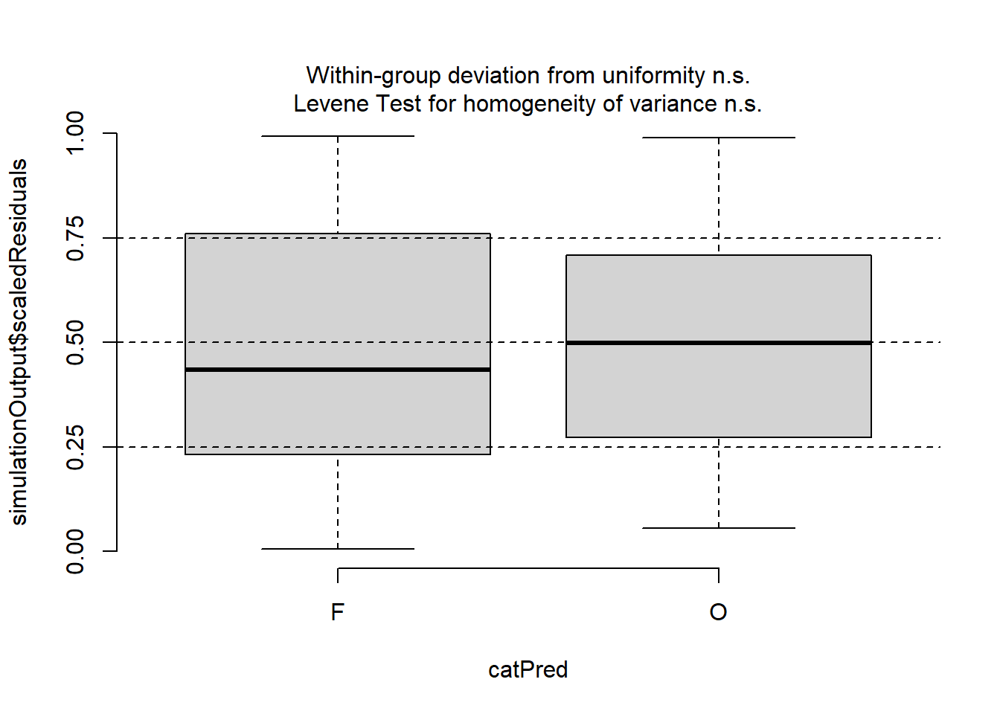
# Darstellung
library("ggeffects")
pred_2 <- ggpredict(lmm_2, terms = c("year", "treatment", "plot_type") )
plot(pred_2) +
theme_classic() +
theme(plot.title = element_blank())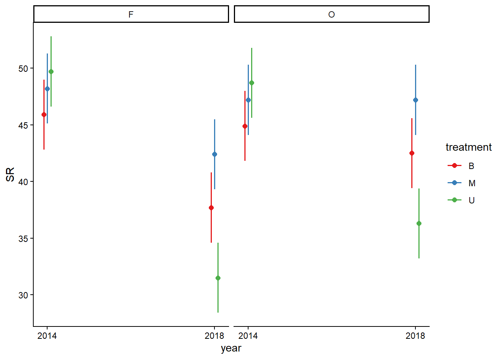
Random slope & random intercept
Im folgenden Beispiel wurde bei 18 Versuchspersonen die Wirkung von zunehmenden Schlafentzug auf die Reaktionszeit (in ms) gemessen. Bei jeder Versuchsperson wurde der Effekt an den Tagen 2–9 des Versuchs je einmal gemessen (Tage 0 und 1 sind die Trainingsphase und bleiben daher unberücksichtigt).
# Daten laden
library(lme4)
data(sleepstudy)
?sleepstudy
# Daten ohne Trainingsphase
sleepstudy_2 <- subset(sleepstudy, Days>=2)
str(sleepstudy_2)'data.frame': 144 obs. of 3 variables:
$ Reaction: num 251 321 357 415 382 ...
$ Days : num 2 3 4 5 6 7 8 9 2 3 ...
$ Subject : Factor w/ 18 levels "308","309","310",..: 1 1 1 1 1 1 1 1 2 2 ...summary(sleepstudy_2) Reaction Days Subject
Min. :203.0 Min. :2.00 308 : 8
1st Qu.:265.2 1st Qu.:3.75 309 : 8
Median :303.2 Median :5.50 310 : 8
Mean :308.0 Mean :5.50 330 : 8
3rd Qu.:347.7 3rd Qu.:7.25 331 : 8
Max. :466.4 Max. :9.00 332 : 8
(Other):96 table(sleepstudy_2$Subject)
308 309 310 330 331 332 333 334 335 337 349 350 351 352 369 370 371 372
8 8 8 8 8 8 8 8 8 8 8 8 8 8 8 8 8 8 # Visualisierung
ggplot(sleepstudy_2, aes(y = Reaction, x = Days)) +
geom_point() +
xlab("Number of days of sleep deprivation") +
ylab("Average reaction time (ms)") +
geom_smooth(method = "lm", formula = 'y ~ x', se = F, fullrange = T) +
theme_classic() +
facet_wrap(~Subject)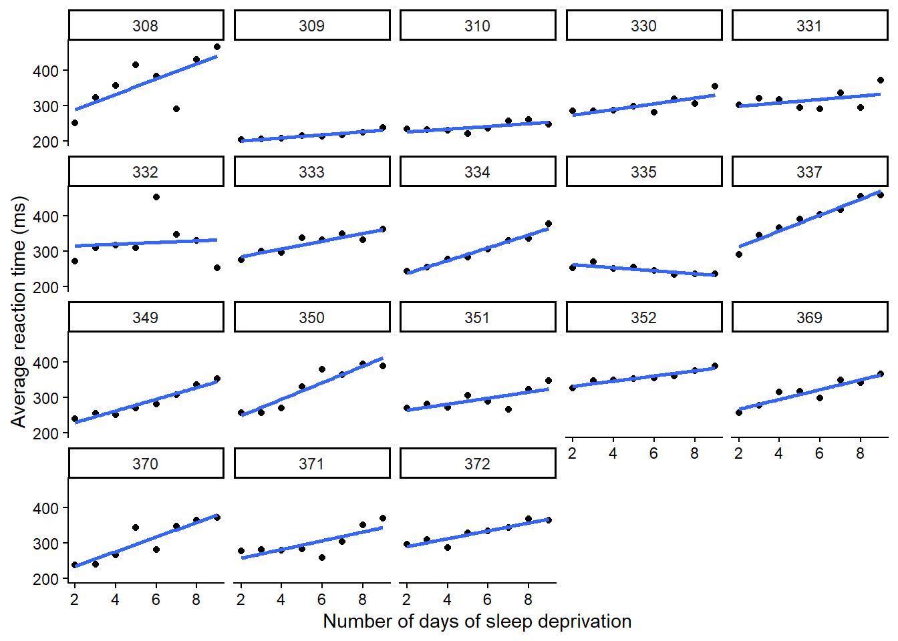
Wie man in der Visualisierung sehen kann, unterscheiden sich nicht nur die Intercepts (Reaktionszeit ohne Schlafmangel), sondern der Schlafmangel scheint sich auch unterschiedlich stark auf die Reaktionszeit der Probanden auszuwirken. In diesem Fall ist es daher sinnvoll, nicht nur einen Random Intercept, sondern auch einen Random Slope zu fitten.
# Fit models
# Random slope
lmm_1 <- glmmTMB(Reaction ~ Days + (1 | Subject),
family = gaussian,
data = sleepstudy_2)
# Random slope + random intercept
lmm_2 <- glmmTMB(Reaction ~ Days + (Days | Subject),
family = gaussian,
data = sleepstudy_2)
# Model vergleich mit AICc (package "MuMIn")
AICc(lmm_1, lmm_2) df AICc
lmm_1 4 1446.778
lmm_2 6 1425.771# Model mit random slope und random intercept hat tieferen AICc
# Modellvalidierung
set.seed(123)
simulationOutput <- simulateResiduals(fittedModel = lmm_2, plot = TRUE, n = 1000)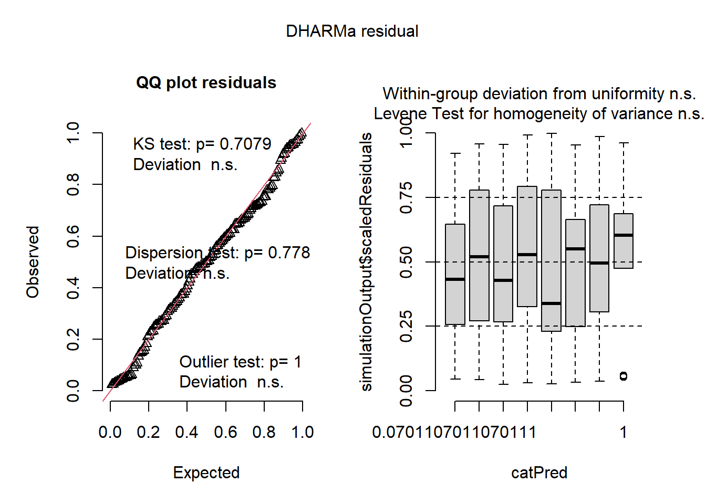
plotResiduals(simulationOutput, form = sleepstudy_2$Days)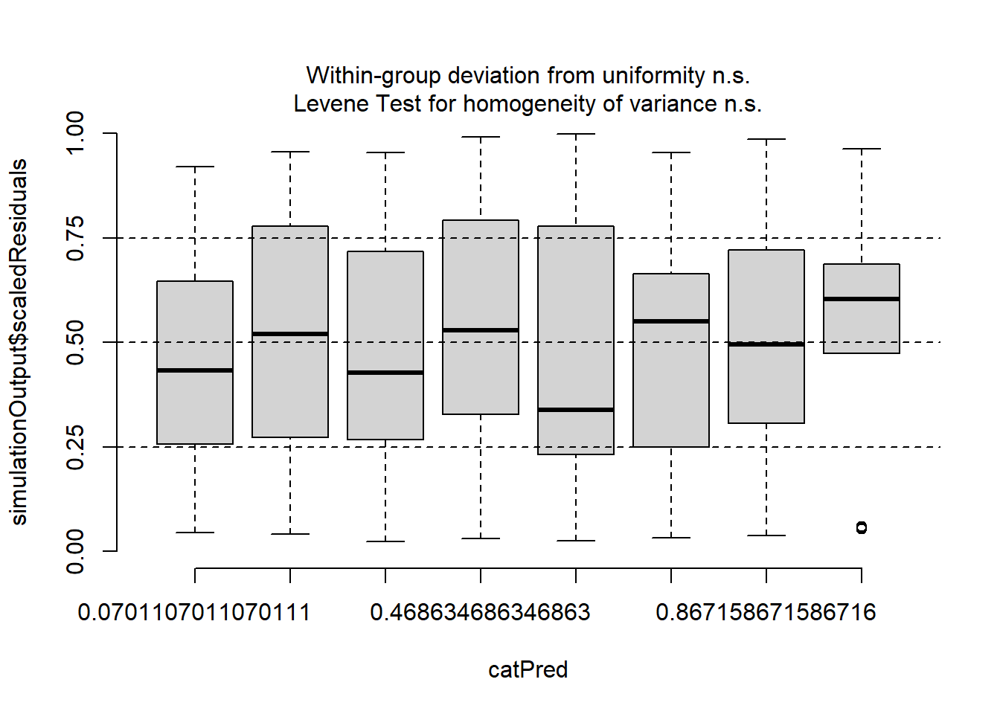
# Model resultat
summary(lmm_2) Family: gaussian ( identity )
Formula: Reaction ~ Days + (Days | Subject)
Data: sleepstudy_2
AIC BIC logLik -2*log(L) df.resid
1425.2 1443.0 -706.6 1413.2 138
Random effects:
Conditional model:
Groups Name Variance Std.Dev. Corr
Subject (Intercept) 906.89 30.115
Days 42.37 6.509 -0.24
Residual 651.60 25.526
Number of obs: 144, groups: Subject, 18
Dispersion estimate for gaussian family (sigma^2): 652
Conditional model:
Estimate Std. Error z value Pr(>|z|)
(Intercept) 245.097 8.999 27.236 < 2e-16 ***
Days 11.435 1.793 6.377 1.81e-10 ***
---
Signif. codes: 0 '***' 0.001 '**' 0.01 '*' 0.05 '.' 0.1 ' ' 1r2(lmm_2)# R2 for Mixed Models
Conditional R2: 0.799
Marginal R2: 0.213# Visualisierung
plot( ggpredict(lmm_2) ) +
geom_line(color = "blue") +
geom_point(data = sleepstudy_2, aes(Days, Reaction), alpha = 0.5) +
theme_classic() +
theme(plot.title = element_blank())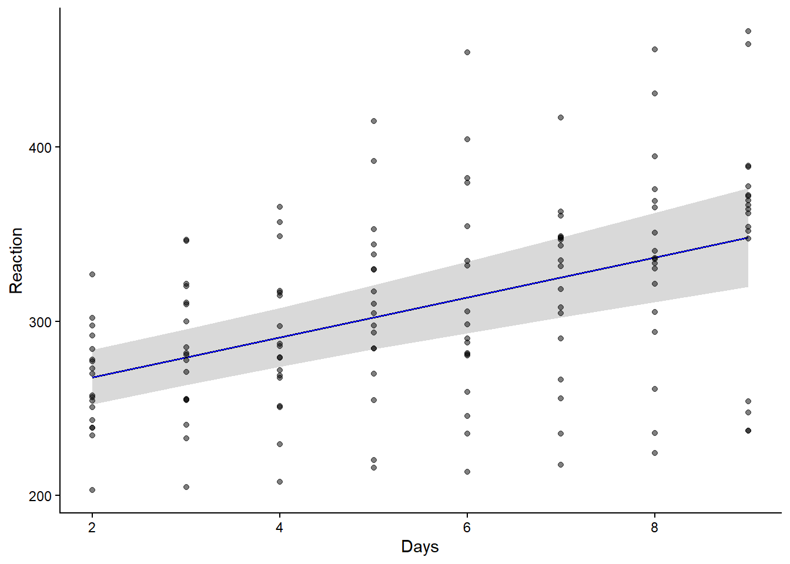
GLMM
Befall von Rothirschen (Cervus elaphus) in spanischen Farmen mit dem Parasiten Elaphostrongylus cervi. Modelliert wird Vorkommen/Nichtvorkommen von L1-Larven 130 dieser Nematode in Abhängigkeit von Körperlänge und Geschlecht der Hirsche. Erhoben wurden die Daten auf 24 Farmen.
# Daten laden und für GLMM aufbereiten
DeerEcervi <- read_delim("datasets/stat/DeerEcervi.csv", delim = ";") |>
mutate( across(where(is.character), as.factor))# Daten anschauen
str(DeerEcervi)tibble [826 × 4] (S3: tbl_df/tbl/data.frame)
$ Farm : Factor w/ 24 levels "AL","AU","BA",..: 1 1 1 1 1 1 1 1 1 1 ...
$ Sex : Factor w/ 2 levels "female","male": 2 1 1 1 1 1 1 1 1 1 ...
$ Length: num [1:826] 164 216 208 206 204 200 199 197 196 196 ...
$ Ecervi: num [1:826] 0 0 0 1 0 0 1 1 1 0 ...summary(DeerEcervi) Farm Sex Length Ecervi
MO :209 female:448 Min. : 75.0 Min. :0.0000
CB : 85 male :378 1st Qu.:151.0 1st Qu.:0.0000
QM : 60 Median :163.0 Median :1.0000
BA : 50 Mean :161.8 Mean :0.6465
PN : 37 3rd Qu.:174.9 3rd Qu.:1.0000
MB : 34 Max. :216.0 Max. :1.0000
(Other):351 table(DeerEcervi$Farm)
AL AU BA BE CB CRC HB LN MAN MB MO NC NV PN QM RF
15 32 50 13 85 1 17 33 27 34 209 27 20 37 60 20
RN RO SAU SE TI TN VISO VY
23 30 3 26 19 25 13 7 # Model fitten. Die function "scale" standartisiert die Kontinuierliche variable Hischlänge:
# ( DeerEcervi$Length - mean(DeerEcervi$Length)) / sd(DeerEcervi$Length )
glmm_1 <- glmmTMB(Ecervi ~ scale(Length) * Sex + (1 | Farm),
family = binomial,
data = DeerEcervi)
Anova(glmm_1)Analysis of Deviance Table (Type II Wald chisquare tests)
Response: Ecervi
Chisq Df Pr(>Chisq)
scale(Length) 70.7552 1 < 2.2e-16 ***
Sex 4.4962 1 0.033969 *
scale(Length):Sex 9.8309 1 0.001716 **
---
Signif. codes: 0 '***' 0.001 '**' 0.01 '*' 0.05 '.' 0.1 ' ' 1summary(glmm_1) Family: binomial ( logit )
Formula: Ecervi ~ scale(Length) * Sex + (1 | Farm)
Data: DeerEcervi
AIC BIC logLik -2*log(L) df.resid
832.6 856.1 -411.3 822.6 821
Random effects:
Conditional model:
Groups Name Variance Std.Dev.
Farm (Intercept) 2.393 1.547
Number of obs: 826, groups: Farm, 24
Conditional model:
Estimate Std. Error z value Pr(>|z|)
(Intercept) 0.9397 0.3579 2.625 0.00865 **
scale(Length) 0.7638 0.1363 5.604 2.09e-08 ***
Sexmale 0.6245 0.2242 2.785 0.00535 **
scale(Length):Sexmale 0.7027 0.2241 3.135 0.00172 **
---
Signif. codes: 0 '***' 0.001 '**' 0.01 '*' 0.05 '.' 0.1 ' ' 1r2(glmm_1)# R2 for Mixed Models
Conditional R2: 0.504
Marginal R2: 0.143# Modellvalidierung
# Area Under the Curve (AUC)
performance_roc(glmm_1)AUC: 84.90%set.seed(123)
simulationOutput <- simulateResiduals(fittedModel = glmm_1, plot = TRUE, n = 1000)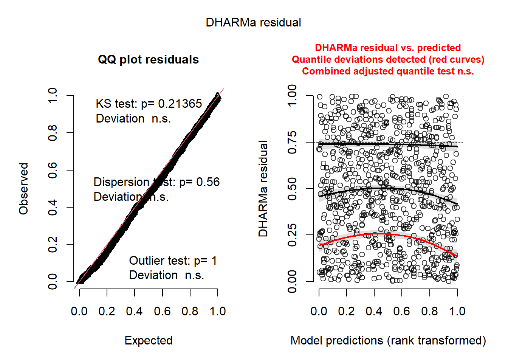
plotResiduals(simulationOutput, form = DeerEcervi$Sex)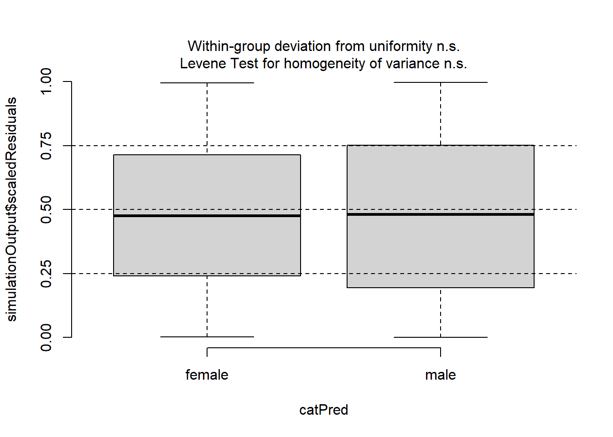
plotResiduals(simulationOutput, form = scale(DeerEcervi$Length) )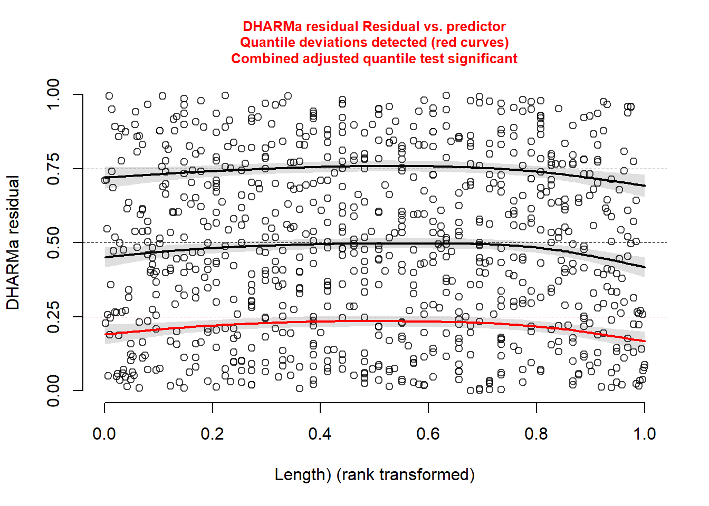
# Visualisierung
pred_3 <- predict_response(glmm_1, c("Length[all]", "Sex") )
# mit all werden für mehr Körperlängen Werte predicted was zu smootheren
# lines im plot führt
ggplot(pred_3, aes(x, predicted, color = group)) +
geom_line(linewidth = 1) +
geom_point(data = DeerEcervi, aes(Length, Ecervi, color = Sex), alpha = 0.5) +
labs(x = "\n Dear body length [cm]",
y = "Wahrscheinlichkeiten einer Elaphostrongylus cervi infection \n") +
theme_classic() +
theme(plot.title = element_blank())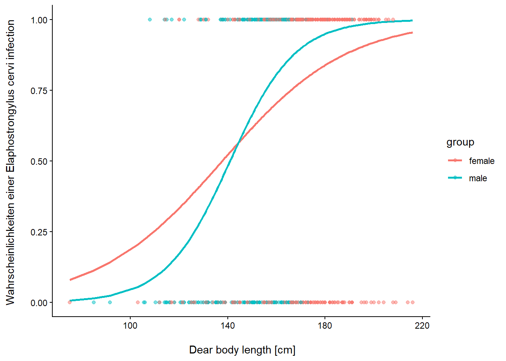